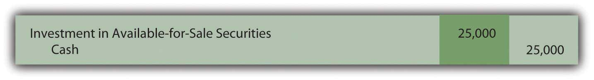
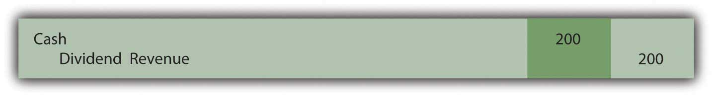
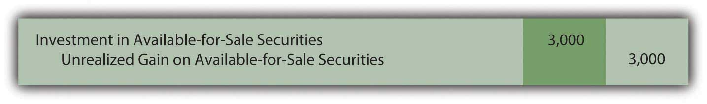
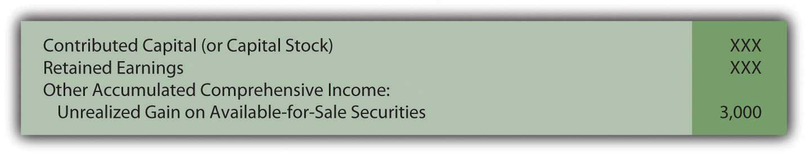
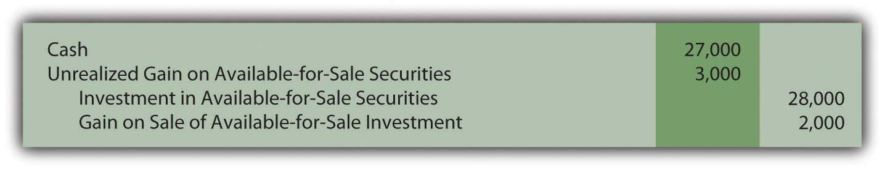

At the end of this section, students should be able to meet the following objectives:
Question: Not all investments in stock are bought for a quick sale. Assume Valente Corporation buys one thousand shares of Bayless Corporation for $25 in Year One but does not anticipate selling the investment in the near term. Company officials intend to hold these shares for the foreseeable future until the money is clearly needed. Although the stock could be sold at any time, the president of Valente believes this investment might well be retained for years. During Year One, a $200 cash dividend is received from the Bayless shares. At the end of that period, the stock is selling for $28 per share. How does the decision to hold equity shares for an extended period of time impact the financial reporting process?
Answer: Because Valente’s intention is to retain these shares for an indefinite period, they will be classified on the company’s balance sheet as an investment in available-for-sale securitiesClassification of investments in stocks and bonds when management’s intentions are to retain them for an indefinite period; they are reported on the balance sheet at fair value although gains and losses are included in stockholders’ equity and not within net income. rather than as trading securities. Despite the difference in the plan for these shares, they are—once again—recorded at historical cost when acquired.
Figure 12.5 Purchase of Ownership Shares Classified as Available-for-Sale Securities
The receipt of the dividend is also reported in the same manner as before with the dividend revenue increasing Valente’s net income.
Figure 12.6 Receipt of Dividend from Investment in Stock
The difference in reporting begins at the end of the year. U.S. GAAP requires available-for-sale investments to be included on the investor’s balance sheet at fair value (in the same manner as trading securities). As before, this adjustment to fair value creates an unrealized gain of $3,000. However, reported net income is not affected as it was with the investment in the trading security.
Figure 12.7 Shares of Bayless (an Available-for-Sale Security) Adjusted to Fair Value at End of Year

Question: An immediate question is obvious: If not presented on the income statement, how is the $3,000 unrealized gain in the value of this investment shown by the owner? How are changes in the value of available-for-sale securities reported?
Answer: Because no sale is expected in the near term, the fair value of available-for-sale shares will possibly go up and down numerous times before being sold. Hence, the current gain is not viewed as “sure enough.” As a result of this uncertainty, a change in the owner’s reported net income is not considered appropriate. Instead, any unrealized gain (or loss) in the value of an investment that is classified as available-for-sale is reported within the stockholders’ equity section on the balance sheet. The figure is listed either just above or below the retained earnings account. A few other unrealized gains and losses are handled in this manner and are usually combined and reported as “other accumulated comprehensive incomeA section of the stockholders’ equity of the balance sheet where unrealized gains and losses on available-for-sale securities (as well as a few other specified gains and losses) are shown rather than being included within net income..”
Figure 12.8 Stockholders’ Equity Including Other Accumulated Comprehensive Income
The above procedures were first created in 1993 and have been used since that time. Interestingly, in 2007, FASB passed a rule that allows companies to elect to report available-for-sale investments in the same manner as trading securities. This option must be selected when the investment is purchased. Thus, if that election is made, the $3,000 unrealized gain above is reported on the income statement despite the intention to hold the securities for an indefinite period. This is another example of accounting rules that are not as rigid as sometimes perceived.
Link to multiple-choice question for practice purposes: http://www.quia.com/quiz/2092972.html
Question: Assume that Valente has chosen not to report the above available-for-sale investment in the same manner as a trading security but rather by means of the traditional approach. Thus, the $3,000 unrealized gain created by the appreciation of value is reported within stockholders’ equity at the end of Year One. Subsequently, in Year Two, these shares are sold on the stock exchange for $27,000. What reporting is made at that time? How is the eventual sale of investments that are classified as available-for-sale securities reported?
Answer: When available-for-sale securities are sold, the difference between the original cost ($25,000) and the selling price ($27,000) is reported as a realized gain (or loss) on the income statement. Because no change in net income was reported in the previous year, this entire amount has to be reported at the date of sale. Having put the unrealized gain into stockholders’ equity in Year One means that the change in value only touches net income when sold.
However, mechanical complexities now exist. The investment has been adjusted to a $28,000 carrying amount and a $3,000 unrealized gain is still reported within stockholders’ equity. As a balance sheet account, this $3,000 figure is not closed out at the end of Year One. When the investment is sold, both the $28,000 asset and the $3,000 unrealized gain must be removed. The net amount mirrors the $25,000 historical cost of these shares. By eliminating the previous gain in this manner, the asset is brought back to the original $25,000. Thus, the appropriate realized gain of $2,000 is recognized: the shares were bought for $25,000 and sold for $27,000.
Figure 12.9 Sale of Available-for-Sale Security in Year Two
Link to multiple-choice question for practice purposes: http://www.quia.com/quiz/2092950.html
Question: In Year One, Valente’s investment in the shares of Bayless Corporation rose in value by $3,000. If those investments are classified as available-for-sale, this unrealized gain does not impact reported net income but, rather, stockholders’ equity. This handling is justified because the investor will not necessarily sell these shares in the near future so that numerous subsequent changes in value are likely to take place.
However, net income seems a bit misleading since it does not reflect the increase in the reported worth of this asset. Assume, for example, that Valente reports total net income for Year One of $80,000. That figure includes no part of the $3,000 unrealized gain. What reporting is necessary to help investors understand the impact on income of a change in value when investments are labeled as available-for-sale?
Answer: Indeed, the completeness of reported net income in such situations can be questioned. As noted, changes in the value of available-for-sale securities create unrealized gains or losses that appear in the stockholders’ equity section of the balance sheet but not in net income. To help decision makers better evaluate the reporting company, a second income figure is disclosed that does include these gains or losses. The resulting balance is known as comprehensive incomeNet income plus any unrealized gains and less any unrealized losses that appear in the stockholders’ equity section rather than within net income; it can be shown at the bottom of the income statement or in a separate schedule.. It can be shown on the bottom of a company’s income statement or in a separate schedule. Here, by adding in the $3,000 change in fair value, Valente’s net income figure is adjusted to the more complete total.
Figure 12.10 Net Income Converted to Comprehensive Income

Decision makers can choose to emphasize one figure (net income) or another (comprehensive income) in their analysis of the reporting company. More appropriately, they can view the two figures as simply different ways to portray the results of the current year and make use of both.
Comprehensive income includes all changes in stockholders’ equity other than (a) amounts contributed by stockholders and (b) dividend distributions made to stockholders. Unrealized gains and losses on available-for-sale securities are common but several other unrealized gains and losses are also included in moving from net income to comprehensive income.
For example, for the year ended December 31, 2008, Yahoo! Inc. reported its net income as approximately $424 million. However, the company also disclosed comprehensive income of only $213 million. The $211 million reduction was caused by including gains and losses that resulted from (a) changes in value of available-for-sale securities and (b) translation changes in currency exchange rates reported by subsidiaries operating in foreign countries. According to U.S. GAAP, these gains and losses were not deemed appropriate for inclusion in net income and, instead, were shown in stockholders’ equity. However, interested parties can still see their impact on income as reflected in the comprehensive income figure.
Link to multiple-choice question for practice purposes: http://www.quia.com/quiz/2092951.html
Investments in equity securities are often held by the owner for an indefinite period of time. As such, the asset is classified as available-for-sale and shown at fair value each period. Any changes in the reported amount is not included in net income but is rather listed within other accumulated comprehensive income in the stockholders’ equity section of the balance sheet. However, dividends received from the investment are reported as revenue and include in net income. When eventually sold, the difference between original cost and the proceeds received is reported as a gain or loss shown within net income. Because periodic changes in value are not factored into the calculation of net income, they are included in determining comprehensive income. Thus, both net income and comprehensive income are reported to allow decision makers to better understand the impact of these unrealized gains and losses.